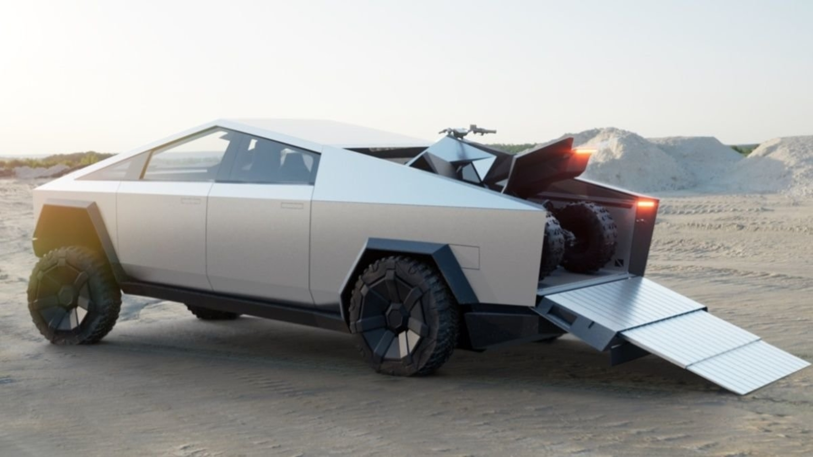
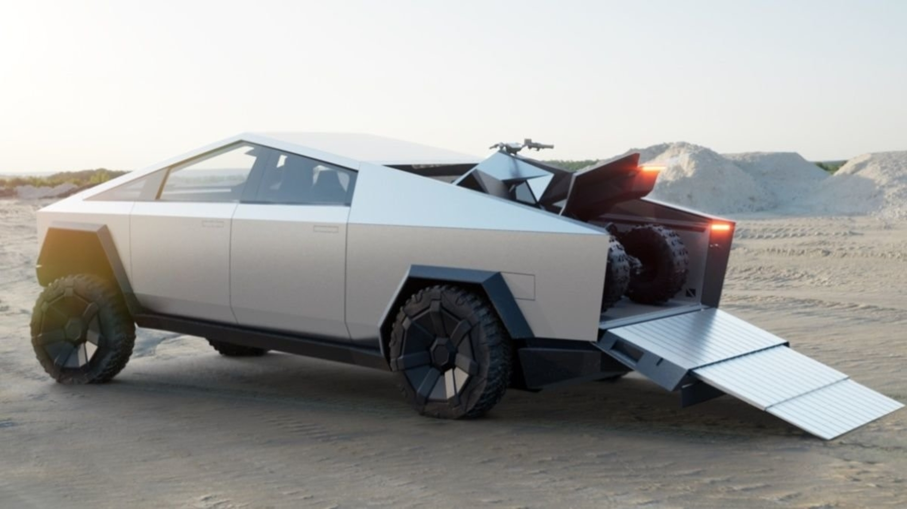
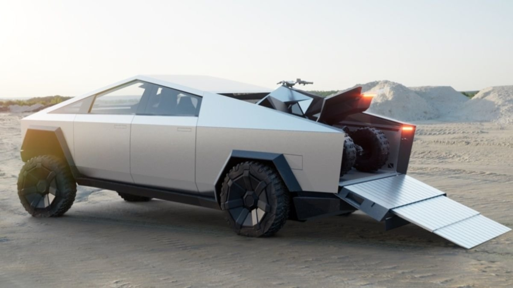

Tesla Cybertruck este un vehicul comercial cu baterii electrice în curs de dezvoltare de Tesla, Inc
Au fost anunțate trei modele, cu o estimare a distanței de 250–500 mile (400–800 km) și un timp aproximativ de 0–60 km / h de 2,9–6,5 secunde, în funcție de model.
Scopul declarat al Tesla în dezvoltarea Cybertruck este de a oferi un substitut energetic durabil pentru cele aproximativ 6.500 de camioane cu combustibil fosil vândute pe zi în Statele Unite.
Prețul de bază al modelului de tracțiune cu roțile din spate va fi de 39.900 USD, modelele cu tracțiune integrală începând de la 49.900 USD. Producția Cybertruck urmează să înceapă în 2021, mai multe modele fiind oferite până în 2022.
